〔补充第11节〕
按照图2所示两坐标系的相对取向，该两坐标系的x 轴永远是重合的。在这个情况下我们可以把问题分为几部分，首先只考虑x 轴上发生的事件。任何一个这样的事件，对于坐标系K 是由横坐标x 和时间t 来表示，对于坐标系K′ 则由横坐标x′ 和时间t′ 来表示。当给定x 和t 时，我们要求出x′ 和t′ 。
沿着正x 轴前进的一个光信号按照方程
x=ct
或
x -ct =0 (1)
传播。由于同一光信号必须以速度c 相对于K′ 传播，因此相对于坐标系K′ 的传播将由类似的公式
x′-ct′ =0 (2)
表示。满足(1)的那些空时点(事件)必须也满足(2)。显然这一点是成立的，只要关系
(x′-ct′ )=λ (x -ct ) (3)
一般被满足，其中λ 表示一个常数；因为，按照(3)，(x-ct )等于零时(x′-ct′ )就必然也等于零。
如果我们对沿着负x 轴传播的光线应用完全相同的考虑，我们就得到条件
(x′ +ct′ )=μ (x +ct ) (4)
方程(3)和(4)相加(或相减)，并为方便起见引入常数a 和b 代换常数λ 和μ ，令
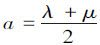
以及
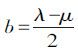
我们得到方程
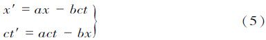
因此，若常数a 和b 为已知，我们就得到我们的问题的解。a 和b 可由下述讨论确定。
对于K′ 的原点我们永远有x′ =0，因此按照(5)的第一个方程
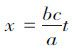
如果我们将K′ 的原点相对于K 的运动的速度称为v ，我们就有
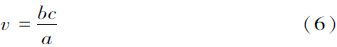
同一量值v 可以从方程(5)得出，只要我们计算K′ 的另一点相对于K 的速度，或者计算K 的一点相对于K′ 的速度(指向负x 轴)。总之，我们可以指定v 为两坐标系的相对速度。
还有，相对性原理告诉我们，由K 判断的相对于K′ 保持静止的单位量杆的长度，必须恰好等于由K′ 判断的相对于K 保持静止的单位量杆的长度。为了看一看由K 观察x′ 轴上的诸点是什么样子，我们只需要从K 对K′ 拍个“快照”；这意味着我们必须引入t (K 的时间)的一个特别的值，例如t =0,对于这个t 的值，我们从(5)的第一个方程就得到
x′ =ax
因此，如果在K′ 坐标系中测量，x′ 轴上两点相隔的距离为Δx′ =1，该两点在我们的瞬时快照中相隔的距离就是
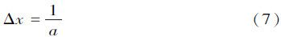
但是如果从K′ (t′ =0)拍取快照，而且如果我们从方程(5)消去t ，考虑到表示式(6)，我们得到
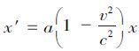
由此我们推断，在x 轴上相隔距离1(相对于K )的两点，在我们的快照上将由距离
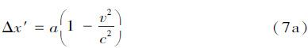
表示。
但是根据以上所述，这两个快照必须是全等的；因此(7)中的Δx 必须等于(7a)中的Δx′ ，这样我们就得到
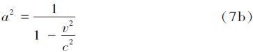
方程(6)和(7b)决定常数a 和b 。在(5)中代入这两个常数的值，我们得到第11节所提出的第一个和第四个方程：
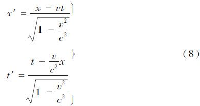
这样我们就得到了对于在x 轴上的事件的洛伦兹变换。它满足条件
x′ 2 -c 2 t′ 2 =x 2 -c 2 t 2 (8a)
再把这个结果加以推广，以便将发生在x 轴外面的事件也包括进去。此项推广只要保留方程(8)并补充以关系式
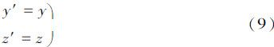
就能得到。
这样，无论对于坐标系K 或是对于坐标系K′ ，我们都满足了任意方向的光线在真空中速度不变的公理。这一点可以证明如下。
设在时间t =0时从K 的原点发出一个光信号。这个光信号将按照方程
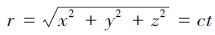
传播，或者，如果方程两边取平方，按照方程
x 2 +y 2 +z 2 -c 2 t 2 =0 (10)
传播。
光的传播定律结合着相对性公理要求所考虑的信号(从K′ 去判断)应按照对应的公式
r′=ct′
或
x′ 2 +y′ 2 +z′ 2 -c 2 t′ 2 =0 (10a)
传播。为了使方程(10a)可以从方程(10)推出，我们必须有
x′ 2 +y′ 2 +z′ 2 -c 2 t′ 2 =σ (x 2 +y 2 +z 2 -c 2 t 2 ) （11）
由于方程(8a)对于x 轴上的点必须成立，因此我们有σ =1。不难看出，对于σ =1，洛伦兹变换确实满足(11)；因为(11)可以由(8a)和(9)推出，因而也可以由(8)和(9)推出。这样我们就导出了洛伦兹变换。
由(8)和(9)表示的洛伦兹变换仍需加以推广。显然，在选择K′ 的轴时是否要使之与K 的轴在空间中相互平行是无关紧要的。同时，K′ 相对于K 的平动速度是否沿x 轴的方向也是无关紧要的。通过简单的考虑可以证明，我们能够通过两种变换建立这种广义的洛伦兹变换，这两种变换就是狭义的洛伦兹变换和纯粹的空间变换，纯粹的空间变换相当于用一个坐标轴指向其他方向的新的直角坐标系代换原有的直角坐标系。
我们可以用数学方法，对推广了的洛伦兹变换的特性作如下的描述：
推广了的洛伦兹变换就是用x,y,z,t 的线性齐次函数来表示x′，y′，z′，t′ ，而这种线性齐次函数的性质又必须能使关系式
x′ 2 +y′ 2 +z′ 2 -c 2 t′ 2 =x 2 +y 2 +z 2 -c 2 t 2 (11a)
恒等地被满足。也就是说： 如果我们用这些x,y,z,t 的线性齐次函数来代换在(11a)左边所列的x′，y′，z′，t′ ，则(11a)的左边将与其右边完全一致。